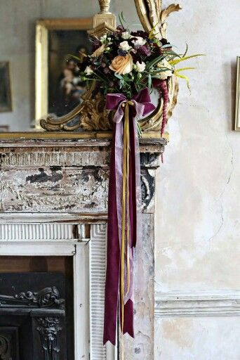

After completing my Degree in Embroidered Textiles in NCAD, I went on to work for specialist retail outlet and design studio A.Rubanesque ltd. As part of my role there I worked on a number of styling projects including a bridal photoshoot for Irish Brides Magazine. Published in the Winter 2015 Issue, the photoshoot was a great success. Below are a selection of images from shoot.
My role in the shoot entailed liasing with the stylist and photographer. Sourcing props and materials for the shoot. In-house production of props including parts of the bows, decor embellishments and garments in the shoot.

Bouquet by Daisy Lane Flowers | Velvet & Organza Bow by Pamela Kelly at A.Rubanesque - 2015.
Chantilly Lace Belt Handmade by Alexa O'Byrne at A.Rubanesque - 2015
Published Photoshoot in the Autumn/Winter 2015 Issue of Irish Brides Magazine - 2015